보드 그림은 PCB 설계 데이터로 그린 렌더링입니다(실물 사진 아님). 사양 일부는 설계 확정 전 목표값입니다.
전체 자료실 · 전체 파일 링크 목록 (CSV)
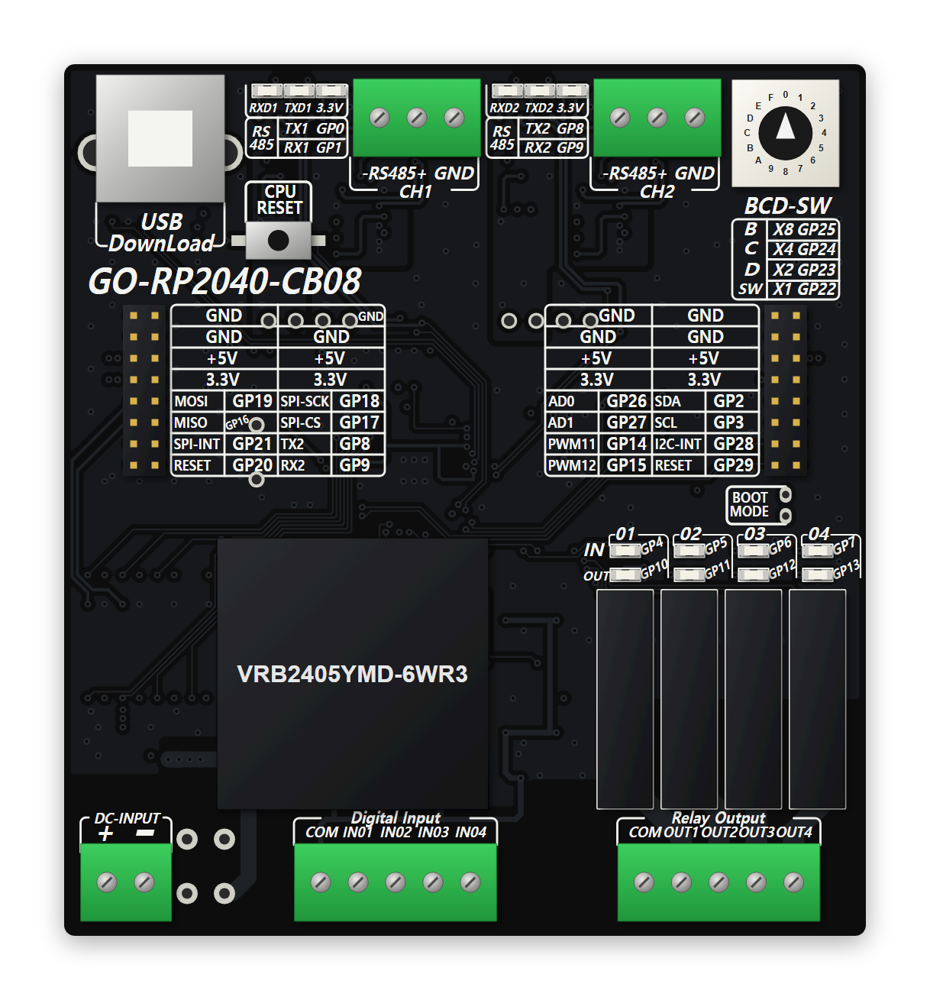
RP2040 기반 산업용 제어 보드 — 절연 입력 4점 · 릴레이 출력 4점 · 절연 RS-485 2채널
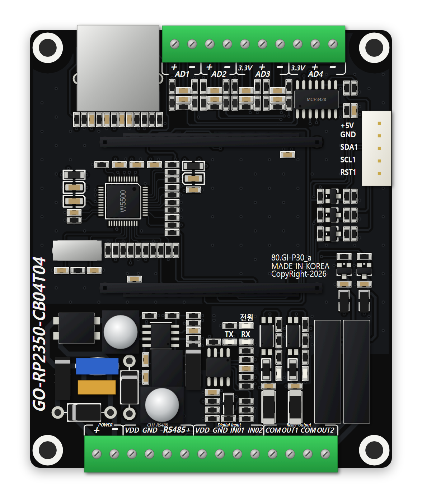
RP2350 2인치 터치 LCD 모듈 캐리어 보드 — 입출력 각 2점 · 아날로그 4채널 · RS-485 · 이더넷
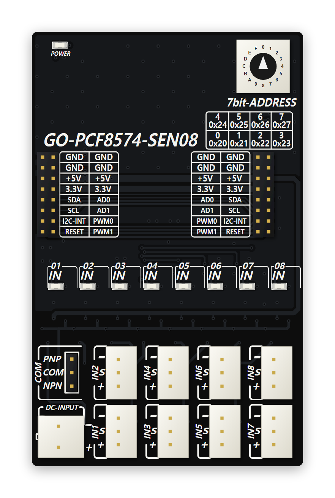
PCF8574 I2C 센서 입력 확장 보드 — 절연 입력 8점 · NPN/PNP 선택 · 주소 설정 스위치
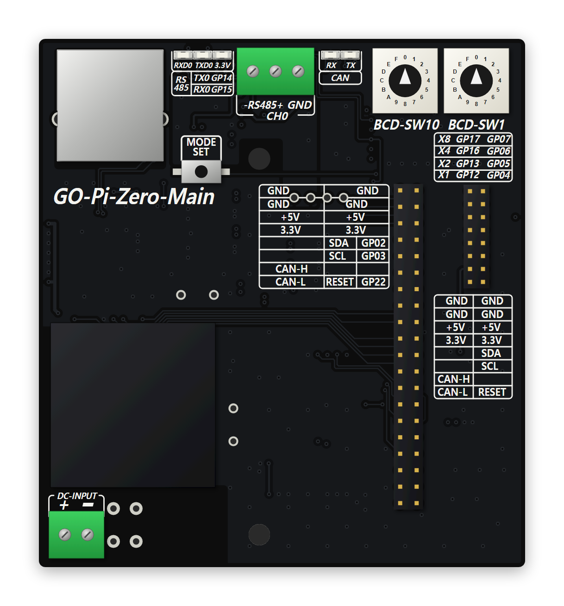
라즈베리파이 Zero 2 장착 메인보드 — 유선 이더넷 · SUB 보드용 CAN 확장 버스 · 절연 RS-485
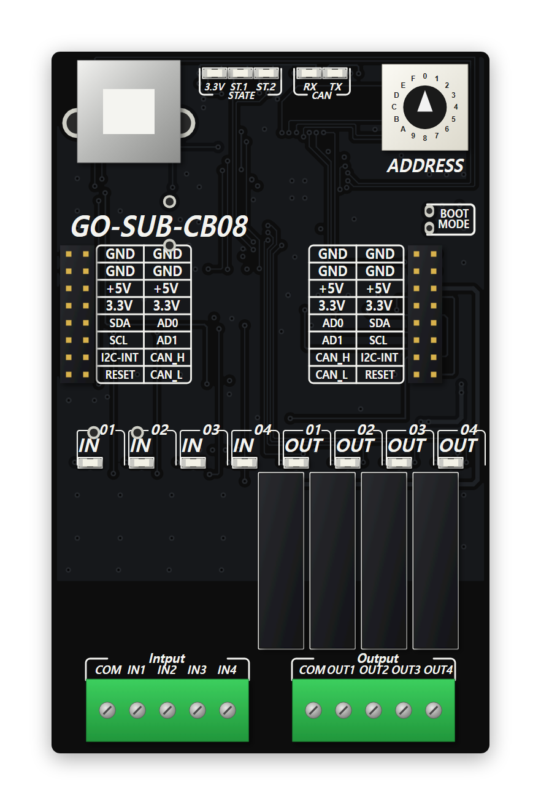
RP2040 기반 확장(SUB) 보드 — 절연 입력 4점 · 릴레이 출력 4점 · CAN 통신
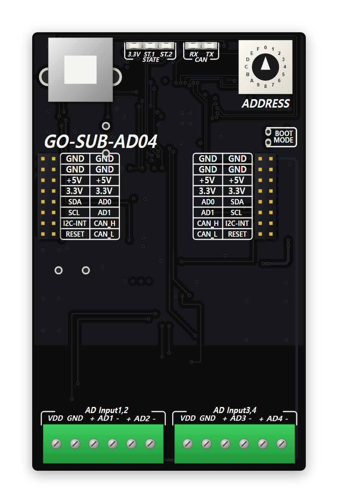
RP2040 기반 확장(SUB) 보드 — 차동 아날로그 입력 4채널 · 16비트 ADC · CAN 통신
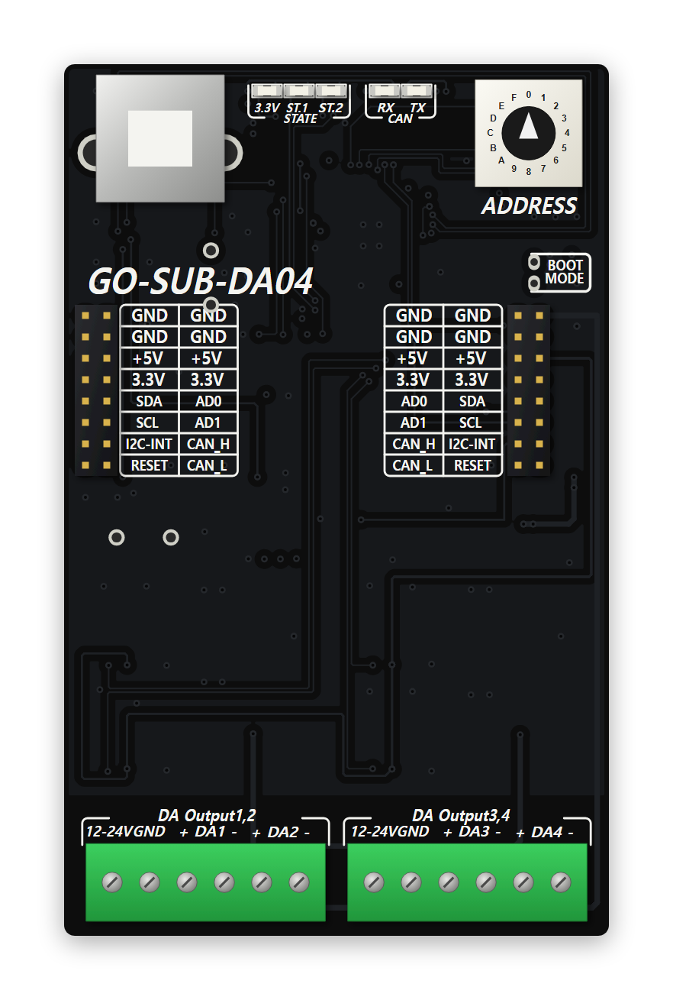
RP2040 기반 확장(SUB) 보드 — 아날로그 전압 출력 4채널 · 출력 전원 12~24V · CAN 통신
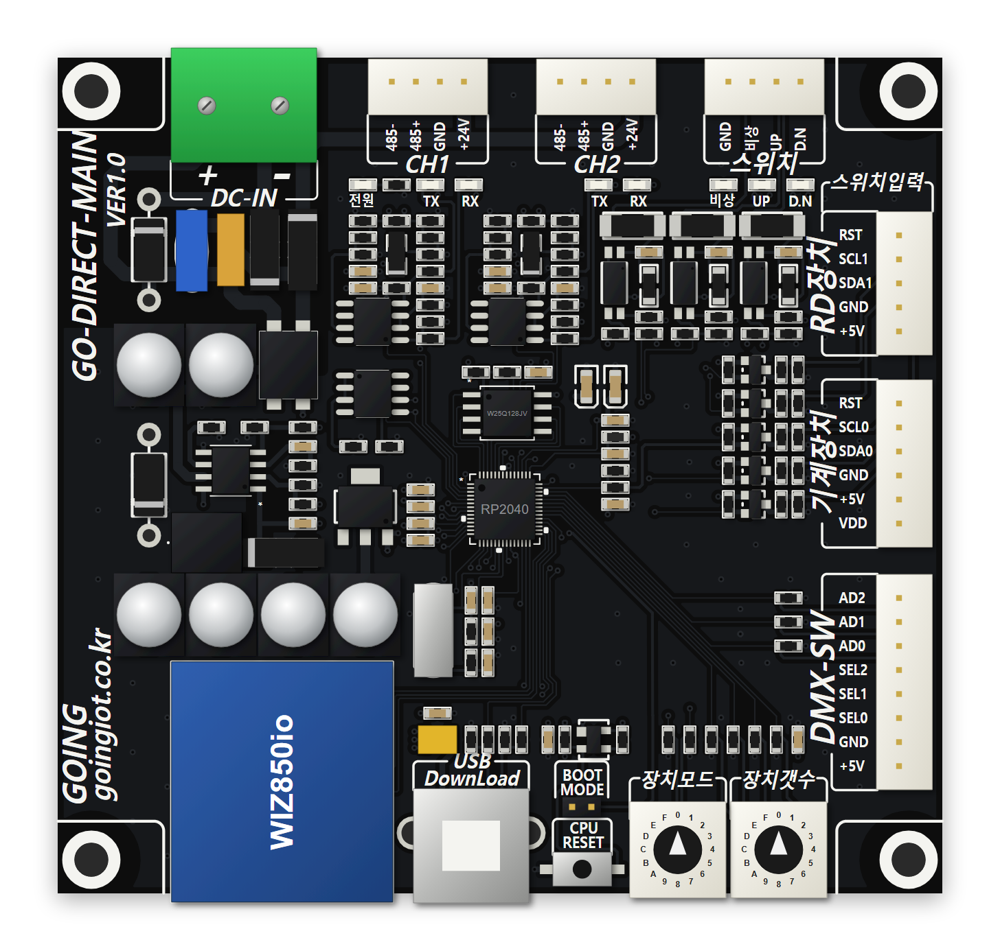
RP2040 기반 GO-DIRECT 메인 보드 — 이더넷 · RS-485 2채널 · 확장 I2C 버스 2계통
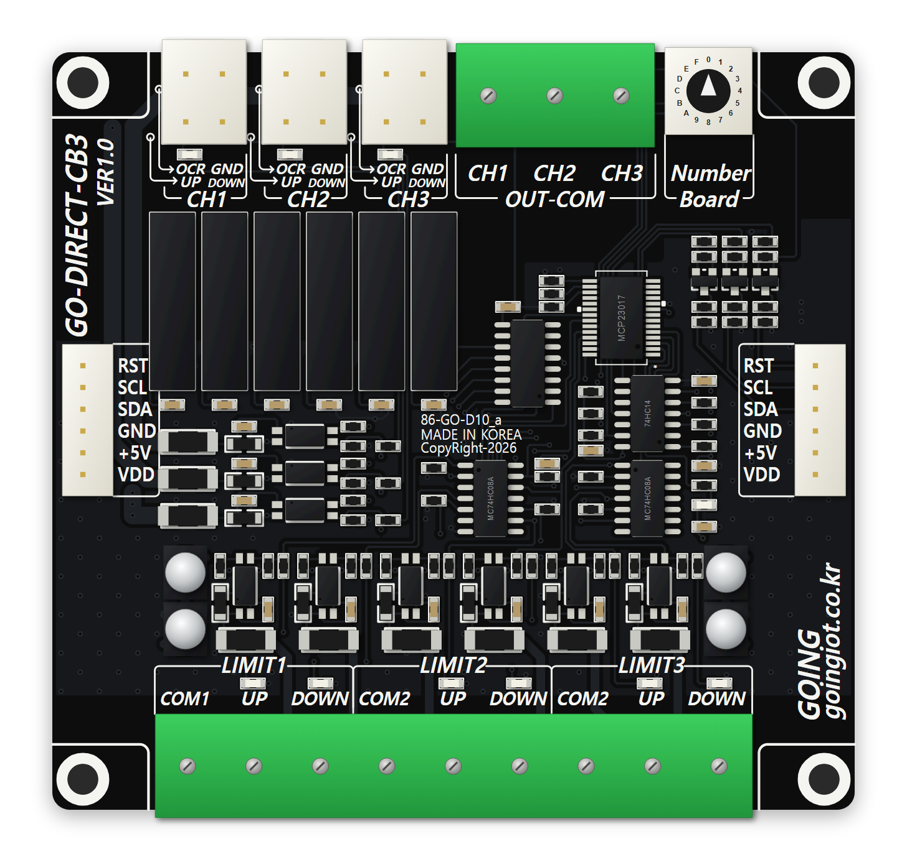
GO-DIRECT 기계장치 확장 보드 — UP/DOWN 릴레이 3채널 · 리밋 입력 6점 · OCR 입력 3점
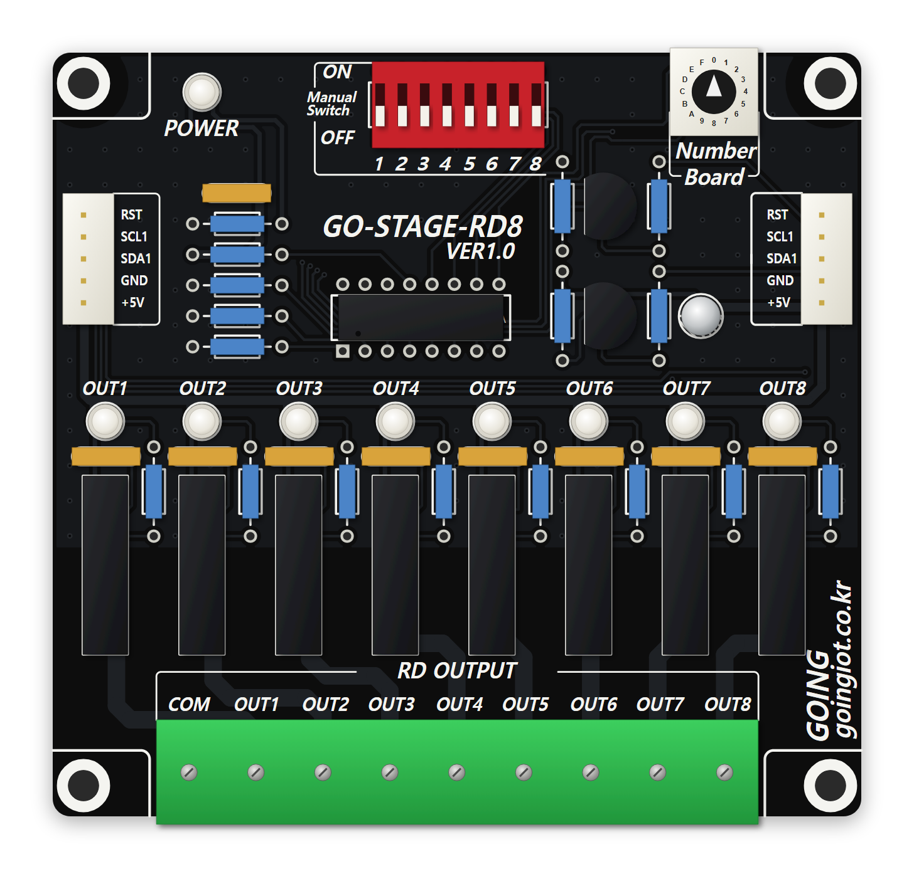
GO-DIRECT RD장치 확장 보드 — 릴레이 출력 8점 · 수동 DIP 스위치 · I2C 주소 설정
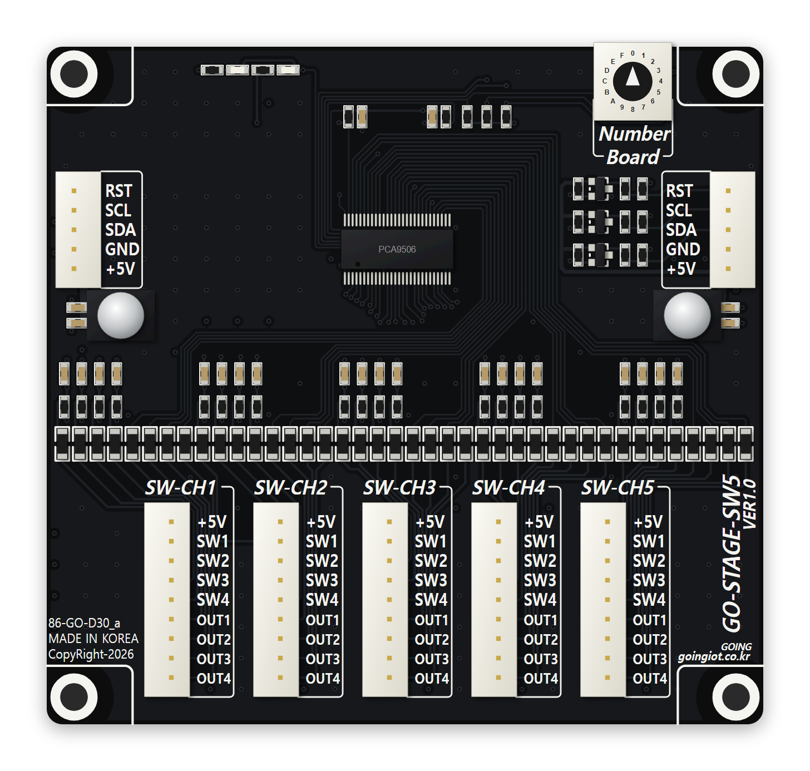
GO-DIRECT 스위치 확장 보드 — 스위치 입력 20점 · 출력 20점 · 5채널 커넥터